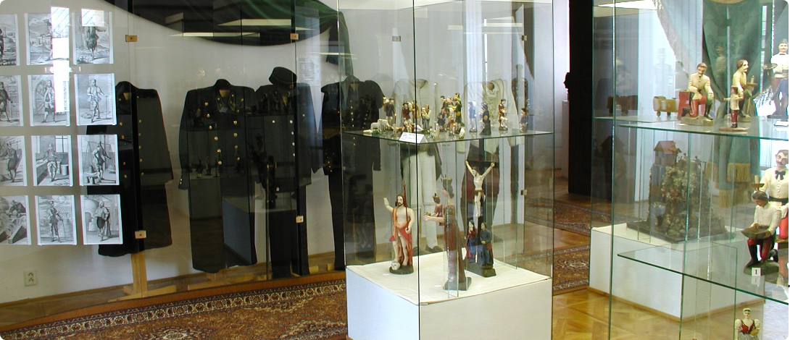
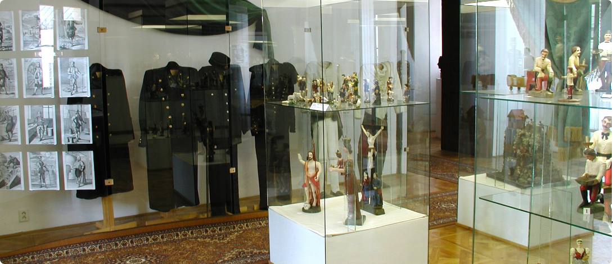

1.Mining Museum kammerhof
 

Reserve around 2 hours for the whole exposition
This museum features an extensive exposition on the history of mining in Slovakia, from the earliest archaeological finds to the 20th century.
It explains various processes which were used in mining and shows functional models of mining machines.
PROS
- Possibility to learn in depth history of Slovak/German mining
- Located in the beautiful building which served once as The Chamber Earl
- The pricing is very cheap
CONS
- It is probably not for you if you do not like history
CONTACT
Address
Kammerhofská 2, 969 01
Banská Štiavnica
Phone number
+421 45/964 94 18
Entry times
| Tuesday | 11:00, 13:00 |
|---|---|
| Saturday | 11:00, 13:00 |